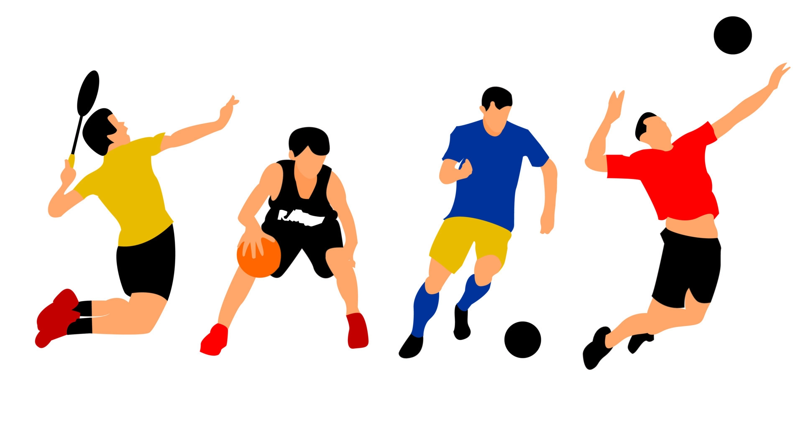

Me llamo Daniel Gutiérrez Gómez, nací el 15 de Septiembre del 2001, en la ciudad de Morelia, Michoacán.
Mis intereses....
Desde niño siempre tuve mucho interés por las matemáticas,
una pasión por los videojuegos así como por los deportes.
Sin embargo, hubo un deporte que jugué durante 11 años
el Squash (info por si no sabes que deporte es). En el squash fui el número 4 a nivel
nacional en la categoría de Sub19 y gané una medalla en
dobles mixtos en Sub-19 también.

Mis Metas....
Tengo planeado vivir en Nueva York, y trabajar
en esa ciudad, ya sea en algún
start up, o ser contratado en algúna empresa grande
como Apple, Google o Snapchat.
En cuanto a lo académico me gustaría salir de
intercambio a Francia o Suiza.
En lo deportivo: correr los 5km en menos de 20 minutos así como el
resolver varios ejercicios en LeetCode.
En lo educativo, leer por lo menos dos libros al mes.